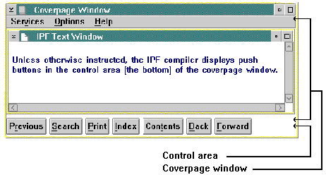
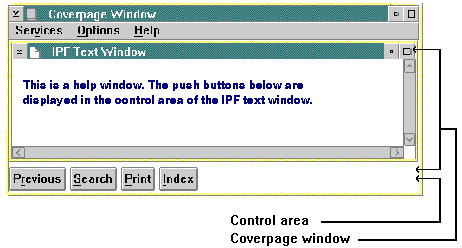

Push buttons provide users with a fast and easy way to access commonly used IPF tasks. When a user selects a push button, the action represented by the text on the push button is carried out immediately. Push buttons are displayed in a window called a control area. A control area can be defined within the IPF coverpage window, or the IPF text window (the child of the coverpage window), or both. For information about the IPF coverpage, see the following figure.
IPF provides one set of push buttons for online documents and another set for help windows.
For online documents, the set of push buttons consists of:
Previous
Search
Print
Index
Contents
Back
Forward
Tutorial (only if a tutorial is available).
Previous
Search
Print
Index
Tutorial (only if a tutorial is available).
The following figure shows an online document with a set of push buttons in the control area of the the coverpage window (the default control area).

The IPF Default Window for Push Buttons. These push buttons appear in the control area of the coverpage window.
Notice the difference in the following figure. This example shows a help window with a set of push buttons in the control area of the IPF text window.

A Help Window. These push buttons were defined in the control area of the IPF page window.
If the user changes the size of the window, the push buttons in the control area will wrap around onto the next line. The push buttons cannot be clipped or scrolled horizontally, because the control area is not part of the scrollable area of the IPF text window.